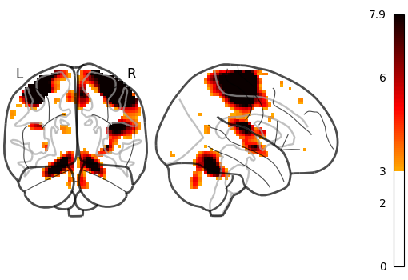
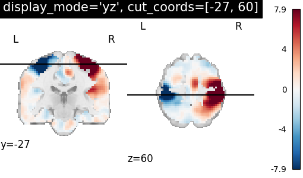
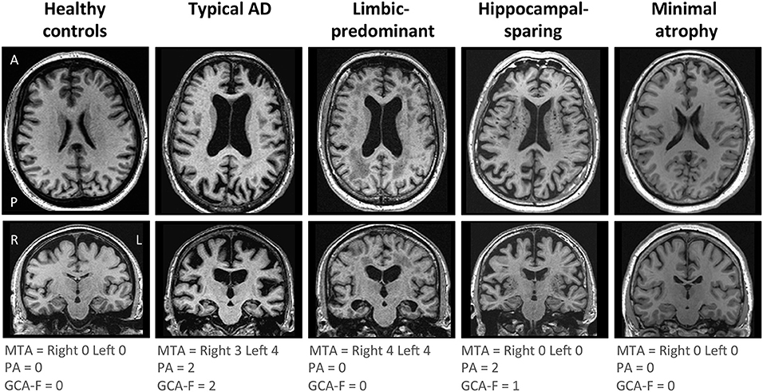

Passion Project: Brain Activation Patterns in fMRI
Using open datasets like Haxby (via Nilearn), this project visualizes neural responses to stimuli and links them to disorders like Alzheimer's—unlocking diagnostic potential through medical imaging.
Key Visualizations



Methods & Insights
- Open fMRI data from Haxby & OpenNeuro
- Python analysis with Nilearn for activation maps
- Literature tie-in: Reduced hippocampal activity in Alzheimer's
- Future: AI-driven abnormality detection